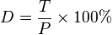

1.1.2 RGB-LED¶
Einführung¶
In dieser Lektion steuern wir mit eine RGB-LED, die verschiedene Arten von Farben zu blinken.
Komponenten¶

Prinzip¶
PWM
Die Pulsweitenmodulation oder PWM ist eine Technik, mit der analoge Ergebnisse mit digitalen Mitteln erzielt werden können. Die digitale Steuerung wird verwendet, um eine Rechteckwelle zu erzeugen, um ein Signal zwischen Ein und Aus zu schalten. Dieses Ein-Aus-Muster kann Spannungen zwischen Voll-Ein (5 Volt) und Aus (0 Volt) simulieren, mit der Änderung von Zeit, in dem das Signal an ist, gegenüber der Zeit, in der das Signal abläuft. Die Dauer der „Einschaltzeit“ wird als Impulsbreite bezeichnet. Um unterschiedliche analoge Werte zu erhalten, ändern oder modulieren Sie diese Breite. Wenn Sie dieses Ein-Aus-Muster mit einem Gerät, beispielsweise einer LED, schnell genug wiederholen, sieht das Ergebnis folgendermaßen aus: Das Signal ist eine konstante Spannung zwischen 0 und 5 V, die die Helligkeit der LED steuert.
Arbeitszyklus
Ein Arbeitszyklus ist der Prozentsatz einer Periode, in der ein Signal aktiv ist. Eine Periode ist die Zeit, die ein Signal benötigt, um einen Ein- und Ausschaltzyklus abzuschließen. Als Formel kann ein Arbeitszyklus ausgedrückt werden als:
{kind=link}
Wobei D das Tastverhältnis ist, T die Zeit ist, zu der das Signal aktiv ist, und P die Gesamtperiode des Signals ist. Ein Tastverhältnis von 60% bedeutet also, dass das Signal in 60% der Fälle eingeschaltet ist, in 40% der Fälle jedoch ausgeschaltet ist. Die „Pünktlichkeit“ für einen Arbeitszyklus von 60% kann je nach Dauer des Zeitraums einen Bruchteil einer Sekunde, eines Tages oder sogar einer Woche betragen.

RGB LED

Die drei Primärfarben der RGB-LED können durch Helligkeit in verschiedene Farben gemischt werden. Die Helligkeit der LED kann mit PWM eingestellt werden. Raspberry Pi hat nur einen Kanal für die Hardware-PWM-Ausgabe, benötigt jedoch drei Kanäle zur Steuerung der RGB-LED, was bedeutet, dass es schwierig ist, die RGB-LED mit der Hardware-PWM von Raspberry Pi zu steuern. Glücklicherweise simuliert die softPwm-Bibliothek PWM (softPwm) durch Programmierung. Alles, was Sie tun müssen, ist die Titeldatei SoftPwm.h (C-Sprachbenutzer) und rufen Sie die API, die es bietet für die einfache Steuerung der RGB-LED durch die Mehrkanal-PWM-Ausgabe, um eine Vielzahl von Farben anzuzeigen.
Schematische Darstellung¶
Nachdem Sie die Pins von R, G und B mit einem Strombegrenzungswiderstand verbunden haben, verbinden Sie sie mit dem GPIO17, GPIO18 bzw. GPIO27. Der längste Pin (GND) der LED ist mit dem GND des Raspberry Pi verbunden. Wenn die drei Pins unterschiedliche PWM-Werte erhalten, zeigt die RGB-LED unterschiedliche Farben an.
T-Karte Name |
physisch |
wiringPi |
BCM |
GPIO17 |
Pin 11 |
0 |
17 |
GPIO18 |
Pin 12 |
1 |
18 |
GPIO27 |
Pin 13 |
2 |
27 |

Experimentelle Verfahren¶
Schritt 1: Bauen Sie die Schaltung auf.

Für Benutzer in C-Sprache¶
Schritt 2: Gehen Sie zum Ordner der Kode.
cd /home/pi/davinci-kit-for-raspberry-pi/c/1.1.2/
Schritt 3: Kompilieren Sie die Kode.
gcc 1.1.2_rgbLed.c -lwiringPi
Bemerkung
Wenn die Anweisung „gcc“ ausgeführt wird und „-o“ nicht aufgerufen wird, wird ausführbare Datei „a.out“ benannt.
Schritt 4: Führen Sie die ausführbare Datei aus.
sudo ./a.out
Nachdem die Kode ausgeführt wurde, sehen Sie, dass RGB Rot, Grün, Blau, Gelb, Pink und Cyan anzeigt.
Kode
#include <wiringPi.h>
#include <softPwm.h>
#include <stdio.h>
#define uchar unsigned char
#define LedPinRed 0
#define LedPinGreen 1
#define LedPinBlue 2
void ledInit(void){
softPwmCreate(LedPinRed, 0, 100);
softPwmCreate(LedPinGreen,0, 100);
softPwmCreate(LedPinBlue, 0, 100);
}
void ledColorSet(uchar r_val, uchar g_val, uchar b_val){
softPwmWrite(LedPinRed, r_val);
softPwmWrite(LedPinGreen, g_val);
softPwmWrite(LedPinBlue, b_val);
}
int main(void){
if(wiringPiSetup() == -1){ //when initialize wiring failed, printf messageto screen
printf("setup wiringPi failed !");
return 1;
}
ledInit();
while(1){
printf("Red\n");
ledColorSet(0xff,0x00,0x00); //red
delay(500);
printf("Green\n");
ledColorSet(0x00,0xff,0x00); //green
delay(500);
printf("Blue\n");
ledColorSet(0x00,0x00,0xff); //blue
delay(500);
printf("Yellow\n");
ledColorSet(0xff,0xff,0x00); //yellow
delay(500);
printf("Purple\n");
ledColorSet(0xff,0x00,0xff); //purple
delay(500);
printf("Cyan\n");
ledColorSet(0xc0,0xff,0x3e); //cyan
delay(500);
}
return 0;
}
Kode Erklärung
#include <softPwm.h>
Bibliothek zur Realisierung der PWM-Funktion der Software.
void ledInit(void){
softPwmCreate(LedPinRed, 0, 100);
softPwmCreate(LedPinGreen,0, 100);
softPwmCreate(LedPinBlue, 0, 100);
}
Die Funktion besteht darin, mit Software einen PWM-Pin zu erstellen und dessen Periode zwischen 0x100us und 100x100us einzustellen.
Der Prototyp der Funktion softPwmCreate (LedPinRed, 0, 100) lautet wie folgt:
int softPwmCreate(int pin,int initialValue,int pwmRange);
Parameter-Pin: Jeder GPIO-Pin von Raspberry Pi kann als PWM-Pin gesetzt werden.
Parameter initialValue: Die anfängliche Impulsbreite ist der initialValue times100us.
Parameter pwmRange: Die Periode von PWM ist die pwmRange times100us.
void ledColorSet(uchar r_val, uchar g_val, uchar b_val){
softPwmWrite(LedPinRed, r_val);
softPwmWrite(LedPinGreen, g_val);
softPwmWrite(LedPinBlue, b_val);
}
Diese Funktion dient zum Einstellen der Farben der LED. Bei Verwendung von RGB repräsentiert der formale Parameter r_val die Luminanz des roten, g_val des grünen, b_val des blauen.
Der Prototyp der Funktion softPwmWrite (LedPinBlue, b_val) lautet wie folgt:
void softPwmWrite (int pin, int value) ;
Parameter-Pin: Jeder GPIO-Pin von Raspberry Pi kann als PWM-Pin gesetzt werden.
Parameter Value: The pulse width of PWM is value times 100us. Note that value can only be less than pwmRange defined previously, if it is larger than pwmRange, the value will be given a fixed value, pwmRange.
ledColorSet(0xff,0x00,0x00);
Rufen Sie die zuvor definierte Funktion auf. Schreiben Sie 0xff in LedPinRed und 0x00 in LedPinGreen und LedPinBlue. Nach dem Ausführen der Kode leuchtet nur die rote LED auf. Wenn Sie LEDs in anderen Farben aufleuchten möchten, ändern Sie einfach die Parameter.
Für Python-Sprachbenutzer¶
Schritt 2: Öffnen Sie die Kodedatei.
cd /home/pi/davinci-kit-for-raspberry-pi/python
Schritt 3: Ausführen.
sudo python3 1.1.2_rgbLed.py
Nachdem die Kode ausgeführt wurde, sehen Sie, dass RGB Rot, Grün, Blau, Gelb, Pink und Cyan anzeigt.
Kode
import RPi.GPIO as GPIO
import time
# Set up a color table in Hexadecimal
COLOR = [0xFF0000, 0x00FF00, 0x0000FF, 0xFFFF00, 0xFF00FF, 0x00FFFF]
# Set pins' channels with dictionary
pins = {'Red':17, 'Green':18, 'Blue':27}
def setup():
global p_R, p_G, p_B
GPIO.setmode(GPIO.BCM)
# Set all LedPin's mode to output and initial level to High(3.3v)
for i in pins:
GPIO.setup(pins[i], GPIO.OUT, initial=GPIO.HIGH)
p_R = GPIO.PWM(pins['Red'], 2000)
p_G = GPIO.PWM(pins['Green'], 2000)
p_B = GPIO.PWM(pins['Blue'], 2000)
p_R.start(0)
p_G.start(0)
p_B.start(0)
# Define a MAP function for mapping values. Like from 0~255 to 0~100
def MAP(x, in_min, in_max, out_min, out_max):
return (x - in_min) * (out_max - out_min) / (in_max - in_min) + out_min
# Define a function to set up colors
def setColor(color):
# configures the three LEDs' luminance with the inputted color value.
R_val = (color & 0xFF0000) >> 16
G_val = (color & 0x00FF00) >> 8
B_val = (color & 0x0000FF) >> 0
# Map color value from 0~255 to 0~100
R_val = MAP(R_val, 0, 255, 0, 100)
G_val = MAP(G_val, 0, 255, 0, 100)
B_val = MAP(B_val, 0, 255, 0, 100)
# Change the colors
p_R.ChangeDutyCycle(R_val)
p_G.ChangeDutyCycle(G_val)
p_B.ChangeDutyCycle(B_val)
print ("color_msg: R_val = %s, G_val = %s, B_val = %s"%(R_val, G_val, B_val))
def main():
while True:
for color in COLOR:
setColor(color)# change the color of the RGB LED
time.sleep(0.5)
def destroy():
# Stop all pwm channel
p_R.stop()
p_G.stop()
p_B.stop()
# Turn off all LEDs
GPIO.output(pins, GPIO.HIGH)
# Release resource
GPIO.cleanup()
if __name__ == '__main__':
setup()
try:
main()
except KeyboardInterrupt:
destroy()
Kode Erklärung
p_R = GPIO.PWM(pins['Red'], 2000)
p_G = GPIO.PWM(pins['Green'], 2000)
p_B = GPIO.PWM(pins['Blue'], 2000)
p_R.start(0)
p_G.start(0)
p_B.start(0)
Rufen Sie die Funktion GPIO.PWM () auf, um Rot, Grün und Blau als PWM-Pins zu definieren und die Frequenz der PWM-Pins auf 2000 Hz einzustellen. Verwenden Sie dann die Funktion Start (), um den anfänglichen Arbeitszyklus auf Null zu setzen.
def MAP(x, in_min, in_max, out_min, out_max):
return (x - in_min) * (out_max - out_min) / (in_max - in_min) + out_min
Definieren Sie eine MAP-Funktion zum Zuordnen von Werten. Zum Beispiel ist x = 50, in_min = 0, in_max = 255, out_min = 0, out_max = 100. Nach der Zuordnung der Kartenfunktion wird (50-0) * (100-0)/(255-0) +0=19.6, zurückgegeben, was bedeutet, dass 50 in 0-255 19,6 in 0-100 entspricht.
def setColor(color):
R_val = (color & 0xFF0000) >> 16
G_val = (color & 0x00FF00) >> 8
B_val = (color & 0x0000FF) >> 0
Konfiguriert die Luminanz der drei LEDs mit dem eingegebenen Farbwert. Weisen Sie R_val die ersten beiden Hexadezimalwerte zu, G_val die beiden mittleren und B_val die letzten beiden Werte. Wenn beispielsweise color = 0xFF00FF ist, ist R_val = 0xFF00FF & 0xFF0000 >> 16 = 0xFF, G_val = 0x00, B_val = 0xFF.
R_val = MAP(R_val, 0, 255, 0, 100)
G_val = MAP(G_val, 0, 255, 0, 100)
B_val = MAP(B_val, 0, 255, 0, 100)
Verwenden Sie die Zuordnungsfunktion, um den R-, G-, B-Wert zwischen 0 und 255 in den PWM-Arbeitszyklusbereich von 0 bis 100 abzubilden.
p_R.ChangeDutyCycle(R_val)
p_G.ChangeDutyCycle(G_val)
p_B.ChangeDutyCycle(B_val)
Weisen Sie den zugeordneten Tastverhältniswert dem entsprechenden PWM-Kanal zu, um die Luminanz zu ändern.
for color in COLOR:
setColor(color)
time.sleep(0.5)
Ordnen Sie jedes Element in der COLOR-Liste der jeweiligen Farbe zu und ändern Sie die Farbe der RGB-LED über die Funktion setColor ().